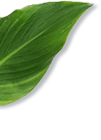
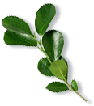
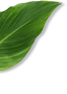
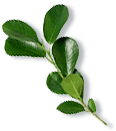
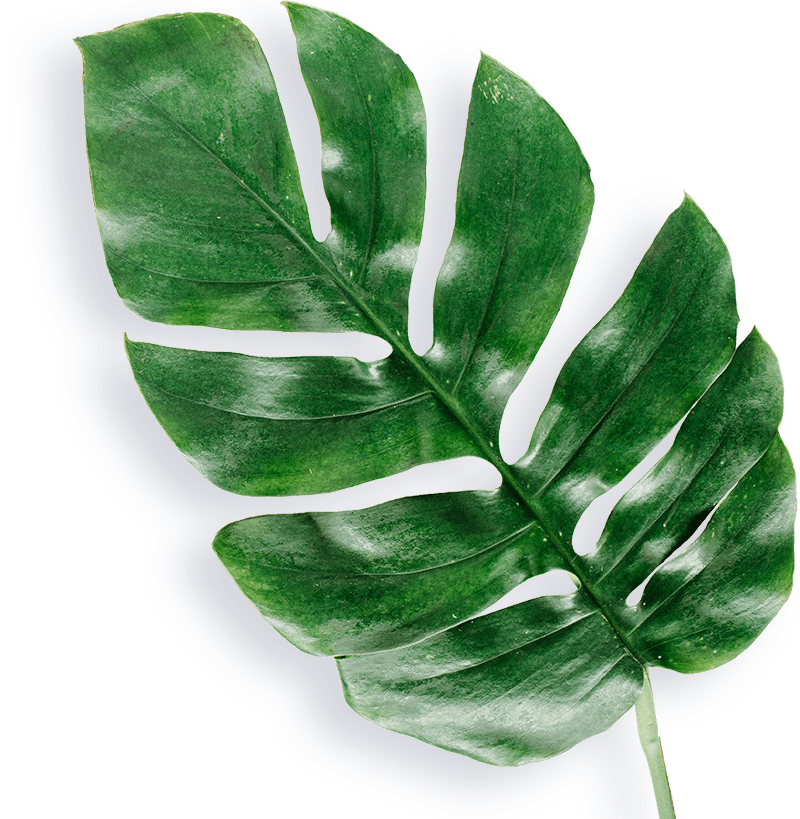
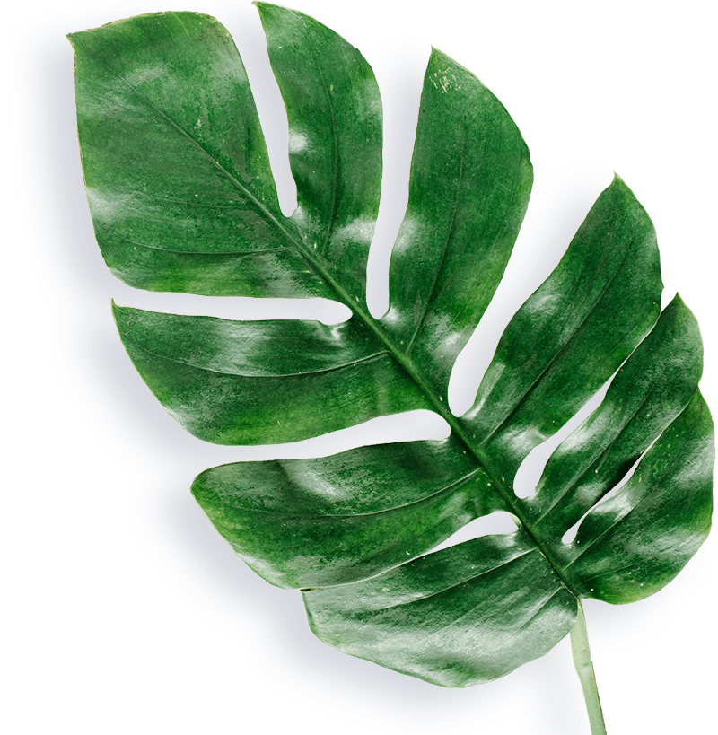

Знает все о вегетарианстве и здоровом питании, победитель премии Live Organic Awards - «Открытие года», «Лучший этичный блогер»
То тут, то там мы слышим «глютен — это плохо», «ешь белок и будешь жить вечно», «не ешь сахар — будет диабет». Мы теряемся в избытке информации: чему верить, а чему нет? Как составить правильный рацион?
Поговорим о том, каким должно быть правильное питание, что искать на прилавках магазинов и какие привычки завести, чтобы чувствовать себя здоровым, полным сил и энергии.
Правильное питание — разнообразное и полноценное.
Чем более разнообразен и полноценен ваш рацион, тем ниже вероятность, что придётся принимать витамины или любые другие лекарства, т.к. все необходимые вещества, обеспечивающие физиологические потребности организма (белки, жиры, углеводы, витамины, минералы), вы получите из еды.
Включите в каждый приём пищи как можно больше полезных продуктов: натуральных и органических. Например, зелёную гречку и киноа, чечевицу и красную фасоль, побольше свежих овощей и зелени. Кстати, лучше всего использовать цельнозерновые злаки и муку, т.к. при стандартной обработке из зерна удаляют зародыш, в котором содержатся все питательные вещества и микронутриенты, такие как железо и витамины группы В, включая никотиновую кислоту, оставляя только бесполезную часть — эндосперм.
Многие считают, что натуральные и органические продукты — это одно и то же. Но это не так. В чём разница?
Органические продукты выращены без синтетических пестицидов, регуляторов роста, красителей и другой химии. Также запрещены приемы, снижающие питательную ценность, такие, как минерализация, рафинирование, атомное расщепление и др. Например, кабачки, которые получили точно так, как делали это 150 лет назад. Органические продукты найти сложно, скорее всего, их не будет даже на овощном рынке.
Натуральные продукты — это любые продукты естественного происхождения, синтетически и генетически не модифицированные. При их выращивании допускается использование химических удобрений и прочих ненатуральных веществ.
Найти их легко, например, картошка с рынка и оливковое масло из супермаркета — натуральные продукты.
Исключите бесполезные и даже вредные продукты и вещества: картофельные чипсы, рафинированный сахар, переработанное мясо, транс-жиры.
Разнообразное питание подразумевает присутствие всех групп продуктов в рационе: злаки, овощи, бобовые, фрукты, орехи, зелень и, конечно же, достаточное количество воды. Чем больше свежих фруктов и овощей вы едите, тем лучше. Каждый день в рационе должны присутствовать все группы продуктов, пускай в небольшом количестве. Также избегайте “перекосов” в одну из групп: если сегодня акцент на злаки, то завтра сделайте акцент на бобовые.
Полноценное питание в России — это довольно сложно. Зима долгая, натуральных и органических свежих овощей нет или они стоят дорого. Где брать витамины? Попробуйте суперфуды. Не стоит их недооценивать.
Суперфуд — это натуральный продукт с очень высоким содержанием полезных веществ. Например, замоченные на несколько часов сырые орехи, семена льна, чиа, куркума, киноа, ягоды годжи и даже киви.
В них нет никакой магии, просто высокая концентрация необходимых и уникальных веществ, которые сложно получить из обычной еды. Добавьте в привычную кашу щепотку куркумы, чайную ложку семян льна — вуаля, ваш завтрак стал в несколько раз полезнее!
Вот еще несколько советов, чтобы прямо сейчас улучшить свой рацион:
- Начинайте день со стакана воды с лимоном. Лимонный сок в небольшой концентрации помогает очиститься от токсинов и разбудить пищеварение. (противопоказания – язва желудка).
- Не пропускайте завтрак. Идеальная схема начала дня: сразу после пробуждения выпиваем стакан воды с лимоном, через 15 минут — фрукт или смузи, а через час — плотный завтрак. Лучший вариант — полезная каша. Устали от геркулеса? Попробуйте мультизлаковую, кедровую или льняную. Вы удивитесь, насколько разнообразны злаковые.
- Ешьте сезонные овощи и фрукты. В них меньше пестицидов и нитратов. Зима — сезон капусты, картофеля, батата, тыквы, моркови, кабачков, лука, чеснока, клюквы, апельсинов, грейпфрутов, хурмы. Летом покупайте любые виды ягод, персики, абрикосы, помидоры, огурцы, молодую капусту и картофель, зелень, свежую стручковую фасоль и др.
- Ешьте фрукты отдельно от других приёмов пищи. Они перевариваются быстрее, чем любой продукт — за 20-30 минут. Поэтому, если их смешивать с другой едой, в желудке начинается процесс брожения.
- Добавьте полезные семена в привычный рацион (напр., льняные, конопляные, тыквенные, чиа, кунжутные). Можно просто посыпать любое блюдо, например, рис с овощами или добавить в салат. Так, ежедневно вы будете получать дополнительную дозу полезных жиров и аминокислот.
Здоровое питание — это не сложно и не дорого. Скорее, это привычка осознанно относиться к тому, что попадает в ваш организм. Попробуйте, со временем эта привычка станет только сильнее, а Вы увидете результат, который порадует Вас.
 



 
